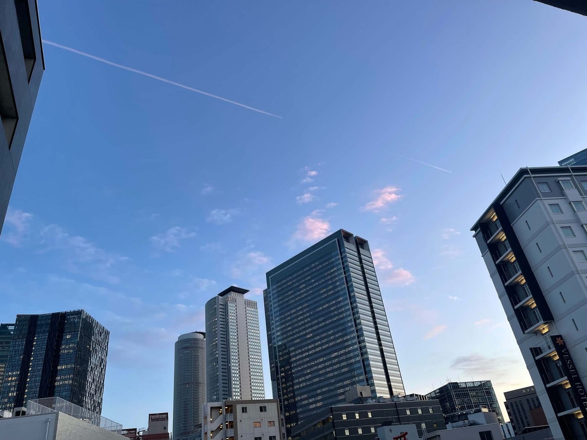

A New Beginning
As the aircraft slowly descended toward Japan, I looked out of the window expecting to see a city. Instead, I saw an airport surrounded entirely by the sea. I was amazed. I had never imagined that an international airport could be built on an artificial island in the middle of the ocean. Before I had even stepped outside the aircraft, Japan had already surprised me.
When the plane finally touched down at Chubu Centrair International Airport, I felt a mixture of excitement and nervousness. The long journey from Nepal was finally over, but I knew a much greater journey was only just beginning. As I walked through the airport, everything around me felt unfamiliar. The signs were written in Japanese, people moved quietly and respectfully, and the entire airport was incredibly clean and well organized. Although I could not understand most of what I saw or heard, I felt an overwhelming sense of curiosity. I had truly arrived in a place unlike anywhere I had ever experienced before.
After completing the immigration process and collecting my luggage, I was greeted by a friend who had come to welcome me. Seeing a familiar face in such an unfamiliar place instantly made me feel more relaxed. Together, we boarded the train towards Nagoya. I spent most of the journey looking through the window, watching Japanese towns, rivers, houses, and train stations pass by. Everything seemed peaceful, organized, and remarkably clean. Even the smallest neighbourhoods looked beautiful, and I remember thinking how different everyday life appeared compared to what I had known in Nepal.
When we finally arrived at my accommodation, I unlocked the door to what would become my home for the next several years. The room was much smaller than I had imagined, yet it felt like the beginning of a completely new chapter in my life. As I placed my suitcase on the floor and sat quietly on the bed, the reality finally sank in—I was living in Japan. That evening, I called my family in Nepal. Hearing their voices reminded me how far away I was, but it also reminded me why I had come. I had left everything familiar behind in the hope of creating a better future.
The first few weeks were both exciting and challenging. Every simple task became a learning experience. I learned how to use the railway system, shop at convenience stores, communicate despite the language barrier, and gradually adapt to a completely different culture. There were moments when I felt confused, homesick, and overwhelmed, but each challenge made me stronger. Every small achievement, whether it was successfully asking for directions or ordering food in Japanese, gave me a little more confidence.
"Sometimes the greatest journey is not across countries, but across the person you become."
As time passed, Japan slowly transformed from a foreign country into my second home. I made friends from different countries, improved my Japanese language skills, discovered beautiful places, and learned to live independently. The experiences I gained during those years shaped my personality in ways I had never imagined. Japan taught me discipline, patience, respect, responsibility, and the courage to step outside my comfort zone.
Looking back today, I realise that moving to Japan changed far more than my address. It changed the way I think, the way I see the world, and the person I became. My years in Japan were not simply about studying or working—they were about growing, discovering my potential, and building memories that will stay with me for the rest of my life.
Lessons Japan Taught Me
- Confidence to live independently.
- The value of discipline and responsibility.
- Respect for different cultures and perspectives.
- Friendships with people from around the world.
- The importance of perseverance during difficult times.
- Lifelong memories that continue to inspire me.
My journey in Japan lasted nearly five years, but its lessons will remain with me forever. This was not simply the beginning of my life in another country—it was the beginning of a completely new version of myself.